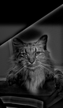
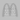

Abstract
I used convolution to detect edges, sharpen photographs, create hybrid images, and blend images at multiple scales.
1.1 Convolution
I wrote two versions of convolution: four loops over the image and kernel, and two loops with NumPy multiplying and summing each window.
I matched the padding logic in SciPy by padding with zeros.
Four loops
def convolve_four_loops(image, kernel):
kernel_h, kernel_w = kernel.shape
padded = np.pad(image, ((kernel_h // 2, (kernel_h - 1) // 2),
(kernel_w // 2, (kernel_w - 1) // 2)))
flipped = kernel[::-1, ::-1]
result = np.zeros(image.shape, dtype=float)
for h in range(image.shape[0]):
for w in range(image.shape[1]):
for kh in range(kernel_h):
for kw in range(kernel_w):
result[h, w] += padded[h + kh, w + kw] * flipped[kh, kw]
return resultTwo loops
def convolve_two_loops(image, kernel):
kernel_h, kernel_w = kernel.shape
padded = np.pad(image, ((kernel_h // 2, (kernel_h - 1) // 2),
(kernel_w // 2, (kernel_w - 1) // 2)))
flipped = kernel[::-1, ::-1]
result = np.zeros(image.shape, dtype=float)
for h in range(image.shape[0]):
for w in range(image.shape[1]):
result[h, w] = np.sum(padded[h:h + kernel_h, w:w + kernel_w] * flipped)
return resultI converted my selfie to grayscale and resized it to 240 × 320. I used a 9 × 9 box filter with weights of \(1/81\) and difference filters \(D_x=[1,-1]\) and \(D_y=D_x^{\mathsf T}\).
Grayscale input
9 × 9 box blur
Horizontal difference
Vertical difference
Agreement and runtime
I compared both outputs with
scipy.signal.convolve2d
using the same boundary. The timings below are from one local run.
| Kernel | Four loops | Two loops | SciPy |
|---|---|---|---|
| 9 × 9 box | 1.67276 | 0.13305 | 0.00564 |
| Dx (1 × 2) | 0.04694 | 0.12253 | 0.00065 |
| Dy (2 × 1) | 0.05025 | 0.12187 | 0.00077 |
The outputs matched those of SciPy with a maximum deviation of \(2.11\times10^{-15}\) across all kernels. Two loops are faster for the box filter, but NumPy’s per-window overhead makes them slower for the small derivative kernels. SciPy is fastest in all three cases.
1.2 Finite differences
I applied the difference filters to the cameraman image and combined the horizontal and vertical responses into the gradient magnitude:
Gradient magnitude
Thresholded edges (\(T=0.20\))
At 0.20, the person, camera, and tripod remain visible. Some grass texture remains, while faint background edges disappear.
Image values are in \([0,1]\). I apply thresholds before display scaling; signed derivatives are shown with zero at gray.
1.3 Derivative of Gaussian
To reduce the grass texture, I blurred the image with \(\sigma=2\) before taking its derivatives. The 13 × 13 Gaussian is the outer product of a normalized 1D kernel from cv2.getGaussianKernel with itself.
Gaussian kernel
Derivative of Gaussian in x
Derivative of Gaussian in y
Since convolutions are associative, I can convolve the image with the derivative-of-Gaussian (DoG) kernels. After smoothing, I lower the edge threshold to 0.05 because the gradients are weaker.
Gaussian-smoothed image
Blur, then differentiate
Single DoG convolutions

With smoothing (\(\sigma=2,\ T=0.05\))
DoG edges (\(\sigma=2,\ T=0.05\))
Comparing sigma and threshold
I tested six thresholds without smoothing and selected \(T = 0.20\) for section 1.2.
I tested \(\sigma \in \{1,2,3\}\) with \(T \in \{0.03,0.05,0.08\}\). More smoothing removes texture but also weakens edges, so sigma and threshold need to be considered together.
2.1 Sharpening
Subtracting a Gaussian blur from the original isolates fine detail. Unsharp masking adds a scaled version of that detail back to the image:
With \(\delta\) as the impulse kernel, this becomes one convolution per color channel. I use \(\sigma=2\), reflected boundaries, and clip to \([0,1]\) only when saving or displaying.
Blurring and resharpening
I blurred the ceiling with \(\sigma=2\), then sharpened it with \(\sigma=2\) and \(\alpha=1.5\). The edges regain contrast, but the fine stone texture remains blurred.
Resharpening reduces the mean square error, but cannot recover the lost texture.
2.2 Hybrid images
A hybrid combines the low frequencies of one image with the high frequencies of another. Fine detail dominates nearby; the blurred source becomes clearer from farther away or at a smaller size.
\(\sigma_L\) sets the blur on A; \(\sigma_H\) sets the blur subtracted from B. Increasing \(\sigma_L\) removes more fine detail from A, while increasing \(\sigma_H\) includes coarser detail from B. The weight \(w\) controls that detail and \(g\) scales the result. Sigmas are in pixels.
| Broad source A | Fine source B | \(\sigma_L/\sigma_H\) | \(w/g\) |
|---|---|---|---|
| Derek | Nutmeg | 10 / 12 | 1.8 / 0.6 |
| FREEDOM | SLAVERY | 6 / 1.5 | 1.15 / 0.75 |
| McDonald’s | Burger King | 8 / 4 | 1.5 / 0.75 |
The hybrids below keep their original pixel sizes. On a phone, scroll inside the large frame. Compare each with its smaller previews.
Derek and Nutmeg

80 × 137 pixelsFREEDOM and SLAVERY
The two seven-letter words use 600 × 180 canvases. FREEDOM uses light-gray bold letters; SLAVERY uses three-pixel outlines. Lowering FREEDOM’s contrast made SLAVERY easier to read nearby.
Fine lettering
McDonald’s and Burger King
I centered the logos on 400 × 400 canvases and mixed the arches with 35% white before filtering.

20 × 20 pixels2.3 Gaussian and Laplacian stacks
In Project 1, I blurred and downsampled each pyramid level. Here I keep every level at the original resolution. Starting with the input, I apply Gaussian blurs with \(\sigma=2,4,8,16,32\) to the preceding level, giving six levels.
Subtracting adjacent Gaussian levels gives the Laplacian detail bands.


\(L_0\)

\(L_1\)

\(L_2\)


\(L_4\)

\(L_5\) · residual

\(L_0\)

\(L_1\)

\(L_2\)

\(L_3\)

\(L_4\)

\(L_5\) · residual
2.4 Multiresolution blending
I blend corresponding Laplacian bands with a Gaussian stack of the mask, then add the blended bands. White selects A and black selects B. Fine bands use sharper masks; coarse bands use smoother masks.
Apple and orange
The mask selects apple on the left and orange on the right. Each Gaussian level widens the transition.


Red panda and giant panda
I used an elliptical mask to put the giant panda’s face inside the red panda’s head.

Neptune and Uranus
I cropped, centered, and resized the planet disks to match. The mask boundary is \(x=200+35\sin(y/65)\), using \(\sigma=40\) before building the mask stack. Neptune is on the left and Uranus on the right.

The panda blend hides the cutout boundary in the fur, but its mismatched muzzle is still visible. Matching the planet outlines gives a cleaner blend.
3. What I learned
Figuring out which images worked for the hybrid effect helped me understand how different frequencies show up in photos: low frequencies capture broad shapes, while high frequencies capture fine details and edges.
Strengthening the high-pass component made Nutmeg and Burger King clearer nearby, but pushed the other interpretation to a smaller viewing size.
Blending had a similar limitation: a smooth mask softened the panda seam without fixing the different face shapes. The planets worked better because their outlines matched.
References and image credits
- CS 180 Project 2: Fun with Filters and Frequencies. Assignment, Taj Mahal, Derek/Nutmeg, and apple/orange examples. The cameraman image is a public copy of the standard test image.
- Aude Oliva, Antonio Torralba, and Philippe G. Schyns. Hybrid Images (2006).
- Peter J. Burt and Edward H. Adelson. A Multiresolution Spline with Application to Image Mosaics (1983).
- SciPy: convolve2d and OpenCV: image filtering.
- Selfie: my photograph. Vaulted ceiling: this ArchitecturePorn post.
- Red panda: Jobert Enamno, Pexels. Giant panda: Snow Chang, Pexels.
- Neptune and Uranus: NASA / Caltech, Neptune (Voyager 2) and Uranus (Voyager 2). Processed Voyager 2 images.
- McDonald’s Golden Arches and Burger King logo, via Wikimedia Commons.


Full-resolution images
Original outputs, including individual images, comparison panels, spectra, masks, and stacks.